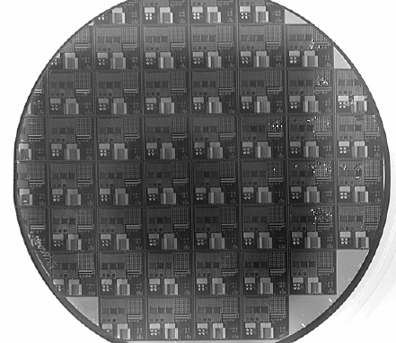
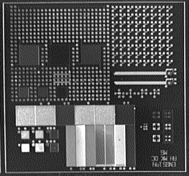
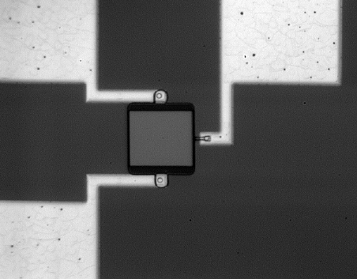
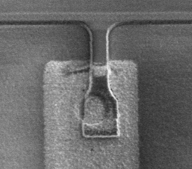

SEM Evaluation
Here is an overview of the wafer:

Here is a detail of a single die:

This SEM displays one of the transistors:

The following is a detail of a contact area; it is clearly visible that the Aluminum was overetched - this is the reason our devices do not function:

Back to main lab page
November 13, 1995